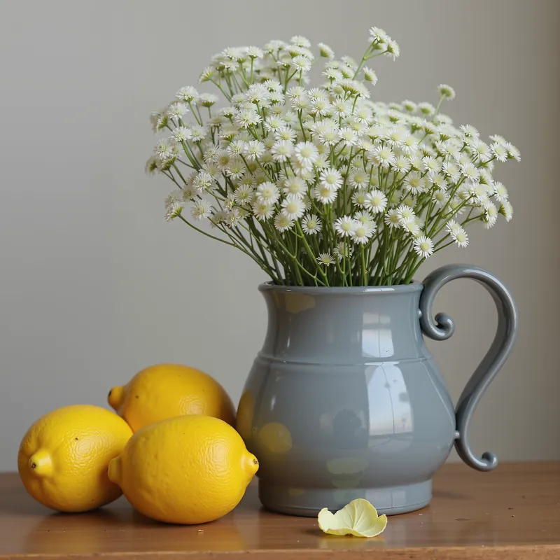
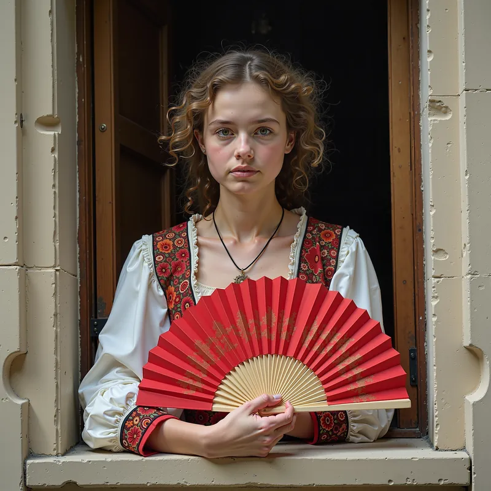
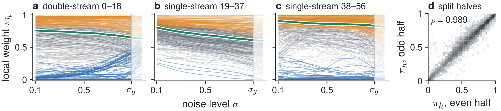
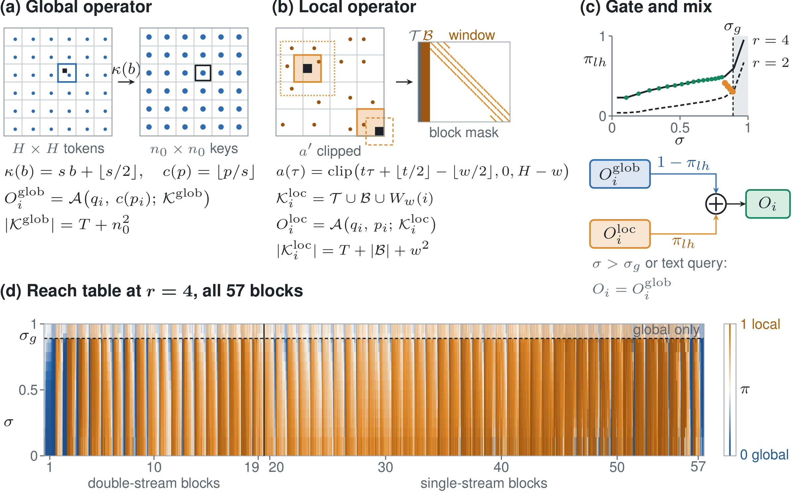
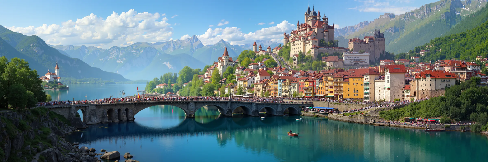

Scale-Covariant AttentionPer-Head Receptive Fields Calibrated at the Training Resolution
Training-free 4096² sampling for diffusion transformers. Each head's reach is measured once at 1024², where full attention still works.


FLUX.1-dev is trained near one megapixel. SCA gives every attention head its own mix of a native-size window and a native-size grid over the whole image, measured once at 1024², where full attention still works. After the first 8 steps, the head explains 97.5% of the variance in how much attention stays within 16 tokens of the query, the noise level 2.5%. Inside HRDiT's three-stage schedule, SCA beats AReA on all ten per-image metrics at 4096² for each of three seeds, at 4.1× its speed. It matches HRDiT's preference scores in 49.2 s against 107.0 s per image, though HRDiT keeps lower KID and patch FID. A single-pass mode takes 77.1 s, 2.63× faster than AReA.
Abstract
Diffusion transformers trained near one megapixel fail at 4096²: attention meets token counts and position offsets it never saw, at 256 times the cost. Training-free fixes set how far each head looks by hand or per target size, because at the target full attention fails and cannot serve as a reference. At the training resolution, where full attention is still valid, reach is a property of the head. After the first steps, the head explains 97.5% of the variance in how much attention stays near the query, and the noise level 2.5%. We introduce Scale-Covariant Attention (SCA), which gives each head its own mix of a native-size window and a native-size grid over the whole image. Shrinking both views at 1024² to the target's image-to-window ratio lets the model's own full attention fit each mix in closed form, once for every size. Inside HRDiT's three-stage schedule, SCA on FLUX.1-dev at 4096² beats AReA on all ten per-image metrics for each of three seeds at 4.1× its speed, and matches HRDiT's preference scores in 49.2 against 107.0 s per image. A single-pass mode keeps more fine detail and runs in 77.1 s, 2.63× faster than AReA.
Reach is a property of the head
A fix that restricts attention must decide how far each head looks. At 4096² nothing can check that decision, because full attention there is the failure. At 1024², where full attention is still correct, the decision can be measured.
For random queries in every block and step, we recorded the share of each head's image attention within 16 tokens of the query. After the first 8 steps, the variance of that share over all heads and noise levels splits as follows.
SCA therefore calibrates every head on its own and reuses the result at every size through the image-to-window ratio.
Weight on the window, per head
Hover or touch the chart to pick out one head.

Method
SCA replaces only the attention, so it runs inside any sampler. Each head mixes two views that keep the training geometry: an exact native-size window around the query, and a native-size grid of block-centre keys over the whole image. We fit the mix by emulation at 1024². Shrinking both views to the target's image-to-window ratio lets the model's own full attention score them, and the best weight has a closed form. One calibration pass serves every target size.
![Method diagram in three rows. (a) AReA switches every head from weight 0 to 1 at the gate; SCA gives each of FLUX.1-dev's heads its own nearly flat weight curve. (b) At 1024 squared, full attention is approximated by a per-head mix of a shrunken local window and a shrunken global grid; the best weight has a closed form and fills a table indexed by noise level and ratio. (c) Progressive sampling: full attention at 1024 squared, then the per-head mix at 2048 squared with ratio 2 and at 4096 squared with ratio 4.](assets/img/method/method_v2.webp)
Each component up close

The appendix version of the diagram. (a) The global operator on block centres. (b) The local operator with its tiles, windows, bridge and block mask. (c) The gate and the per-head mix. (d) The calibrated table at r = 4 for all 57 blocks.
1Two views per head
The local view is an exact sliding window around each 8 × 8 query tile, at the original positions, plus the text and 1,024 bridge tokens from the whole image. The global view attends to the centre token of every block on a 64 × 64 grid, with coordinates rescaled to that grid. The cost grows linearly with the number of tokens.
2One table for every size
To emulate an image r times larger, we shrink the window and subsample the global view by r at 1024². The best weight per head, noise level and ratio has a closed form. One pass over 32 prompts fills the ratio-2 and ratio-4 tables for all 1368 heads; tables from disjoint prompt halves correlate at 0.989.
3Progressive SCA, the headline
HRDiT's released schedule, kept as is: 30 steps at 1024² with the model's own attention, then decode, upsample, sharpen, re-encode and re-noise for the last 17 steps at 2048² and the last 10 at 4096². SCA replaces HRDiT's attention changes at both upper stages, reading ratio 2 and then 4 from one table.
4Single-pass SCA, the fast mode
All 28 steps run at the target. The first 8 use the global view alone, as AReA does; windows of 128, 112, 96, 80 tokens then hand over to the native 64 for the last 16. The opening, the window sizes and the bridge are set by hand; only the weights are calibrated.
Progressive SCA, HRDiT's schedule. 30 steps at 1024² with full attention. The 2048² stage re-enters at σ = 0.81 for the last 17 steps, the 4096² stage at σ = 0.61 for the last 10; guidance is 3.5, 4.5 and 6.0. Both upper stages start below the gate and the last wide window, so they run the native window, the bridge and the calibrated mix. The 1024² stage takes the place of the global opening.
Single-pass SCA. The 28 steps at 4096²: global view only, then windows of 128, 112, 96, 80 tokens at ratios 2, 2.29, 2.67 and 3.2, then the native window at ratio 4. Every local softmax after the opening also holds the bridge. In each cell of an 8 × 8 partition it takes the 16 tokens whose keys lie farthest from the mean key, recomputed at every block and step with AReA's selection rule. Each window thus also sees tokens from the whole image.
Why the opening is set by hand. Output error cannot see layout. Fitted on output error alone, the best hard switch is local attention from the first step, and the per-head mix without an opening loses 1.33 ImageReward at 4096². On the 46-prompt ablation subset, against SCA without the schedule, that difference is −1.33 [−1.60, −1.06]. The global opening, or the 1024² stage of progressive SCA, therefore sets the layout.
The method in motion
How single-pass SCA works. Silent, with captions drawn in the video (subtitle files: SRT, WebVTT). The images, the per-head weight tables, the window schedule and the speed figures in the video are real; the token grids are schematic.
Method video file missingRender it with web/build/render_method_video.py.
Side by side at 4096²
Every method gets the same prompt and the same seed. Choose the SCA configuration and a method to compare it with, then drag the divider on either image; both move together. The second image is the window inside the white box at native resolution. Eight prompts come from the paper's curated figures, picked on the previous operator's single-pass images; three are random draws and are marked.
Against the multi-stage baselines
Curated, from the paper's comparison figure: AReA, UltraImage, HRDiT and progressive SCA on four prompts, each with a native 1:1 crop of one window shared by the four methods. The prompts rank highest in progressive SCA's per-image advantage over the three baselines, among prompts where every baseline's ImageReward is at or above its own 10th percentile. The windows were placed by hand where the crops show progressive SCA's advantage most clearly.
How sampling unfolds
Each video follows one 4096² sample of single-pass SCA through all 28 steps. It shows the decoded estimate of the clean image at each step, the active phase (global view only, shrinking windows, or native windows), the weights of all 1368 heads, and a crop at native pixels. A second view plays single-pass SCA and AReA side by side.
Results
FLUX.1-dev on all 195 Aesthetic-4K prompts at 4096², seed label 0. Progressive SCA and HRDiT run HRDiT's three-stage schedule; single-pass methods share AReA's sampler with 28 steps and guidance 4.5. Intervals are paired bootstrap 95% intervals over prompts.
| Method | Steps | Time (s) ↓ | Image Reward ↑ | HPSv2.1 ↑ | Pick Score ↑ | CLIP ↑ | MUSIQc ↑ | FID ↓ | Patch FID ↓ | |
|---|---|---|---|---|---|---|---|---|---|---|
| clean | camp. | |||||||||
| Single pass, shared sampler (28 steps, guidance 4.5) | ||||||||||
| Full attention | 28 | 186.5 | 196.2 | −2.18 | 7.60 | 17.94 | 15.37 | 33.1 | 312.4 | 252.2 |
| DyPE | 28 | n/m | 195.9 | −0.10 | 20.55 | 20.51 | 24.92 | 50.3 | 205.5 | 171.9 |
| SEGA | 28 | n/m | 190.4 | 0.56 | 24.34 | 21.64 | 26.95 | 50.3 | 164.9 | 125.8 |
| AReA | 28 | 202.4 | 264.4 | 0.92 | 27.16 | 22.36 | 27.69 | 50.4 | 145.8 | 102.9 |
| Single-pass SCA (ours) | 28 | 77.1 | 78.4 | 1.25 | 29.73 | 23.12 | 29.14 | 60.1 | 140.2 | 98.4 |
| Multi-stage, own recipe and budget | ||||||||||
| UltraImage | 30+30 | n/m | 308.5 | 1.28 | 30.77 | 23.33 | 28.84 | 41.7 | 142.0 | 109.5 |
| HRDiT | 30+17+10 | 107.0 | 110.4 | 1.34 | 30.92 | 23.46 | 29.12 | 53.5 | 138.4 | 103.0 |
| Progressive SCA (ours) | 30+17+10 | 49.2 | 50.7 | 1.32 | 31.02 | 23.41 | 29.39 | 54.1 | 141.9 | 107.7 |
Main comparison at 4096² (paper Table 1). Seconds per image on one GH200: clean is the batch-1 median after a warm-up and campaign the mean over the full run on shared nodes, not ranked; n/m: not measured. Clean times come from three sweeps: AReA and full attention from the first, single-pass SCA from the second, HRDiT and progressive SCA from the third, which re-timed AReA at 202.4 s. HPSv2.1 ×100; MUSIQc is MUSIQ on 1024² crops; patch FID is our own definition and is not comparable across papers. Bold: best; underline: second best, within each group. Blue marks a value significantly better than progressive SCA's and orange one significantly worse (95% paired intervals). Progressive SCA beats every single-pass baseline on every per-image column and trades crop-level detail for preference against single-pass SCA. It matches HRDiT's preference scores in 46% of its time but trails it on KID and patch FID.
Both configurations against AReA
Seconds per image, single pass
Progressive SCA against HRDiT: same schedule, different attention
- Preference scores: no resolved difference. ImageReward −0.02 [−0.09, 0.03], HPSv2.1 +0.10 [−0.14, 0.35] (×100) and PickScore −0.05 [−0.14, 0.04]. Intervals that include zero do not establish equivalence.
- Quality scores split. Progressive SCA is better on HPSv2, MUSIQ, ARNIQA, with MUSIQ +1.3 [0.2, 2.4], and worse on CLIP-IQA by −0.9 [−1.8, −0.1] (×100).
- Time. 49.2 s against 107.0 s per image, timed back to back on one GPU (2.2×); campaign means 50.7 s against 110.4 s.
- Set level. FID is unresolved (+3.4 [−1.8, 7.2]), and HRDiT has lower KID, patch FID (+4.6 [0.6, 7.7] for progressive SCA) and patch KID.
Progressive against single-pass SCA: preference for fine detail
- Progressive SCA gains preference. ImageReward +0.07 [0.01, 0.13], PickScore +0.29 [0.20, 0.38] and HPSv2.1 +1.29 [0.99, 1.59] (×100).
- Single-pass SCA keeps more fine detail. Progressive SCA loses MUSIQ (−3.4 [−5.1, −1.6]) and MUSIQ on 1024² crops (−6.0 [−7.3, −4.6]), and its patch FID is higher by +9.2 [5.1, 13.2]. FID is unresolved (+1.6 [−2.3, 7.3]).
- Steps at 4096². Progressive SCA runs 10 steps there, on an upsampled image; single-pass SCA runs all 28 at the target.
- Time. Campaign means of 50.7 s for progressive and 78.4 s for single-pass SCA on shared nodes.
Progressive SCA against the other baselines
- AReA, seed 0. Better on 10 of 10 per-image metrics: ImageReward +0.40 [0.32, 0.49], PickScore +1.05 [0.93, 1.19], HPSv2.1 +3.86 [3.41, 4.30] (×100).
- AReA, set level, seed 0. FID is unresolved (−3.9 [−8.5, 3.1]). Patch FID (+4.8 [0.1, 10.6]) and patch KID are worse for progressive SCA.
- DyPE, SEGA, full attention. Better on 10, 10 and 10 of 10 per-image metrics. All three are also worse than progressive SCA on FID and patch FID.
- UltraImage. Better on 9 of 10 per-image metrics; aesthetic score is unresolved. On set-level scores, FID (−0.2 [−3.8, 2.5]) and patch FID (−1.9 [−3.7, 0.5]) are unresolved.
More seeds, prompts, sizes and checkpoints
- Progressive SCA, three seeds. Progressive SCA beats AReA on all ten per-image metrics at each of the three seed labels. ImageReward rises by +0.40 [0.32, 0.49], +0.37 [0.29, 0.46] and +0.35 [0.27, 0.45] at seeds 0, 1 and 2, PickScore by +1.05, +1.00 and +0.99.
- Patch FID across seeds. The patch FID gap to AReA is significant at seeds 0 and 2 (+4.8 [0.1, 10.6] and +5.4 [0.8, 10.8]) but not at seed 1 (+1.5 [−2.7, 6.9]). Progressive SCA on HRGen-1K: pending.
- Single pass, two more seeds. With seed labels 1 and 2 on all 195 prompts, single-pass SCA beats AReA on 10 and 10 of the ten per-image metrics; ImageReward +0.306 and +0.264.
- Single pass, HRGen-1K. On all 1000 prompts, single-pass SCA beats AReA on 10 of 10 per-image metrics; ImageReward +0.764 [0.714, 0.816].
- FLUX.1-Krea-dev, single pass. The progressive sampler does not run this checkpoint. Single-pass SCA wins 7 of 10 per-image metrics against AReA and loses 0, at 3.1× its speed (78.4 s against 239.3 s). ImageReward is unresolved (+0.020 [−0.020, 0.063]) and patch FID is worse (+3.4 [1.6, 7.1]).
- Panoramas, single pass. At 2048 × 6144, single-pass SCA beats AReA on 7 of 15 metrics at 60.5 s against 150.5 s, but loses on aesthetic score, patch FID.
- 2048 × 4096 is mixed. The window already covers half the image height, so the per-head mix adds little over AReA's windows. Single-pass SCA is better on 3 of 15 metrics and worse on 3 (aesthetic score, CLIP score, CLIP-IQA), at 41.1 s against 112.4 s.
- Larger squares (previous operator). At 6144², SCA without the schedule beats AReA on 14 of 15 metrics; single-pass SCA takes 174.7 s per image there.
- FLUX.2-dev (previous operator). Calibrated on its own, SCA without the schedule beats full attention on 9 of 10 per-image metrics at 2.0× its speed; ImageReward rises from 0.75 to 1.20 (50 prompts).
From 2048² to 8192²
Single-pass SCA. One prompt and seed at five sizes, taken from the timing runs; the prompt was fixed for timing, not picked for looks. Under each image is a 384 × 384 crop at native pixels, and the time is seconds per image on one GH200. Each size starts from its own noise, so the composition changes with size. The 8192² setting is exploratory: blur and block artifacts remain.
Single-pass showcase

2048 × 6144Other shapes and checkpoints
Curated samples of single-pass SCA. The FLUX.2-dev and FLUX.1-Krea-dev tables were each calibrated on 16 prompts at 1024². The FLUX.2-dev sample comes from the previous operator, without the schedule.
Against a commercial model
This section sets single-pass SCA on FLUX.1-dev, run on one GPU without training, beside Ideogram 4.0, a commercial generator, on six of the same prompts. Each pair uses the same prompt text and shows crops of 512 × 512 native pixels from each image, centred on the same point of the scene. Ideogram 4.0 generates up to about 4 megapixels (2048 × 2048 for a square) and reaches 4096² only through a separate upscaler; SCA samples 4096² (16.8 megapixels) directly. The six prompts come from our curated set, which favours SCA; the Ideogram images are first results, not picked.
The Ideogram images have not been added yet, so the right-hand panels are labelled placeholders. Ideogram's own published samples carry no permission to reuse them, so this page shows only images generated for it (instructions in web/README.md).
Limitations
- Fidelity. Progressive SCA trades fine detail for preference against single-pass SCA (MUSIQ on 1024² crops −6.0, patch FID +9.2). Its patch FID and patch KID are worse than HRDiT's, and its patch FID is higher than AReA's at two of three seeds.
- Hand-set settings. The opening, the window sizes and the bridge are set by hand, because output error cannot see layout. We chose the window sizes on the 46-prompt subset, which is part of the evaluation set.
- Dependence on HRDiT. Progressive SCA depends on HRDiT's schedule, and its sampler does not support FLUX.1-Krea-dev.
- Previous operator. The 6144², 8192², FLUX.2-dev and sensitivity results use SCA without the schedule.
- Calibration. Calibration omits the bridge and sees 16 times fewer keys per branch than the target; the deployed operator's error is untested.
- Metrics. All metrics are automatic, and the intervals ignore multiple comparisons. FID at 299² sees little of the 4K detail.
- Weaker settings. At 2048 × 4096 single-pass SCA loses 3 metrics to AReA, and on FLUX.1-Krea-dev it loses patch FID.
- 8192². Grid and stripe artifacts remain in both SCA and AReA; the 12 prompts there are exploratory and use the previous operator.
- FLUX.2-dev. With the previous operator, better average metrics coexist with distorted faces in a randomly drawn portrait.
Local errors
Previous operator. Curated failures of SCA without the schedule at native pixels, SCA left and AReA right in the same window. AReA shows none of these four errors.
Citation
@article{sca2026,
title = {Scale-Covariant Attention: Per-Head Receptive Fields
Calibrated at the Training Resolution},
author = {Anonymous},
journal = {Under review},
year = {2026}
}